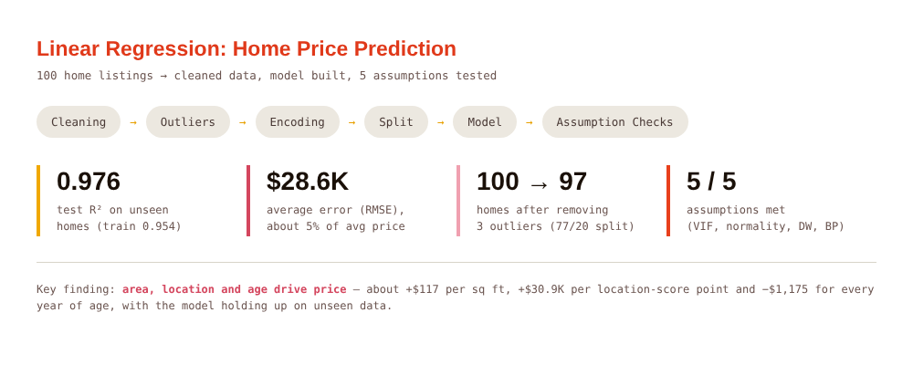
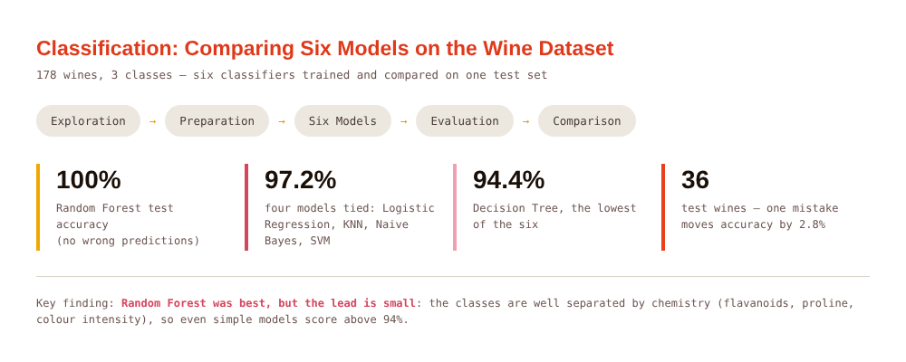
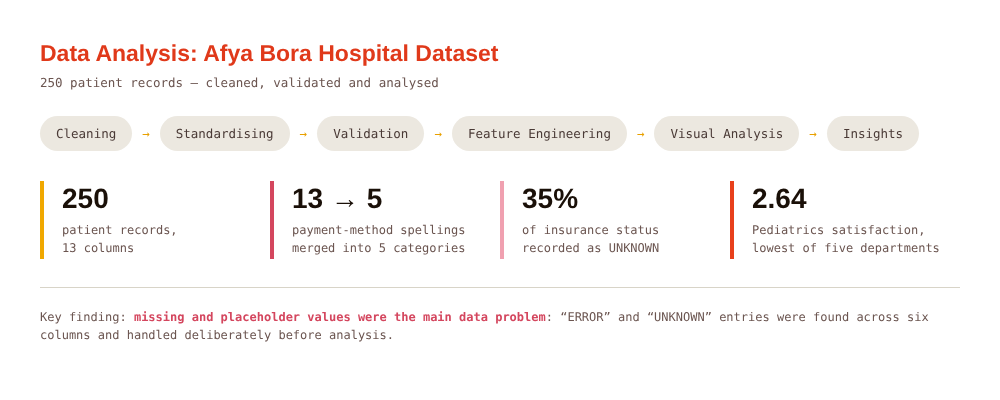
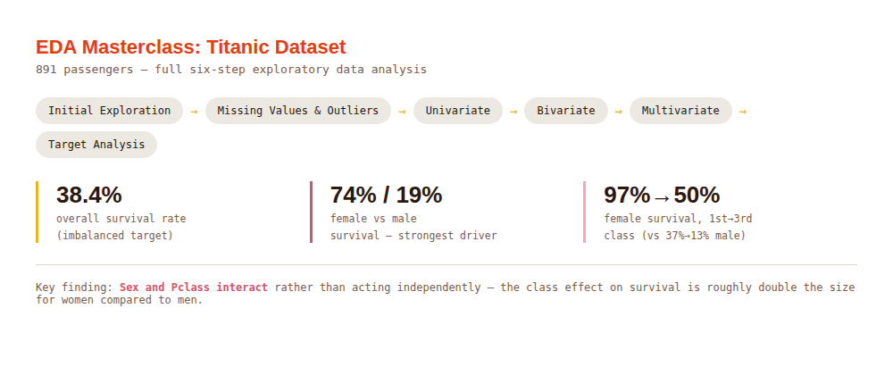
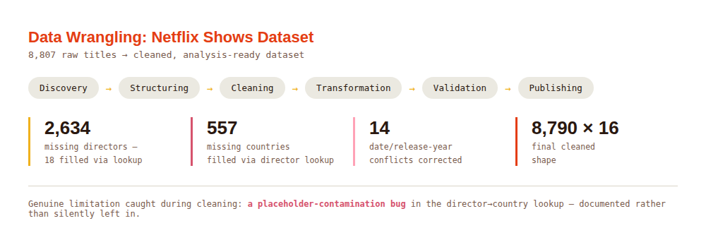
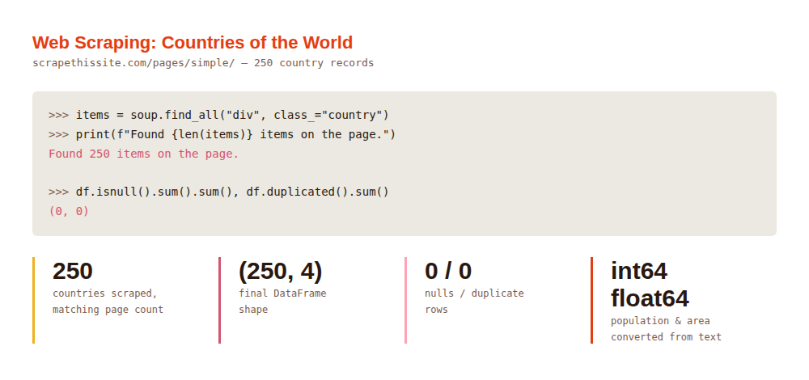

NLP: BERT Embeddings & Sentence Similarity
Natural language processing
Pre-trained BERT embeddings and cosine similarity on 10 sentence pairs: 90% accuracy, plus a test showing how BERT separates the meanings of “bank”.
CHELSEA MOGORE · DATA & AI SPECIALIST
From scraping raw web pages to training neural networks and language models, each project takes messy data to a tested result. The Power BI and Tableau dashboards are written up under Lab Challenges.
9 projects
NLP: BERT Embeddings & Sentence Similarity
Natural language processing
Pre-trained BERT embeddings and cosine similarity on 10 sentence pairs: 90% accuracy, plus a test showing how BERT separates the meanings of “bank”.

Computer Vision: MNIST Digit Classification
Deep learning
A Keras neural network that reads handwritten digits: 97.66% test accuracy, with training history logged to TensorBoard.

Tuning & Deployment: California House Prices
Model tuning & deployment
A tuned KNN pipeline for California house prices (test R² 0.722), saved with joblib and used in a Streamlit app.

Linear Regression: Predicting Home Prices
Regression modelling
Linear regression on 100 home listings: test R² 0.976, average error about $28,600, all five assumptions checked and met.

Classification: Comparing Six Models
Classification
Six classifiers compared on the Wine dataset: Random Forest 100%, four models at 97.2%, Decision Tree 94.4%.

Data Analysis: Afya Bora Hospital
Hospital data analysis
Cleaning and analysis of 250 hospital records: placeholder values handled, a length-of-stay feature built, and cost and satisfaction compared by department.

EDA Masterclass: Titanic Dataset
Exploratory data analysis
Full six-step EDA on 891 Titanic passengers: Sex is the strongest driver of survival, and it interacts with ticket class.

Data Wrangling: Netflix Shows Dataset
Data wrangling
Six-step wrangling of 8,807 Netflix titles: thousands of missing values filled with lookup logic, dates corrected, genres split.

Web Scraping: Countries of the World
Web scraping
Scraped 250 countries from a live HTML page and cleaned the result into a typed, analysis-ready table.
Contact